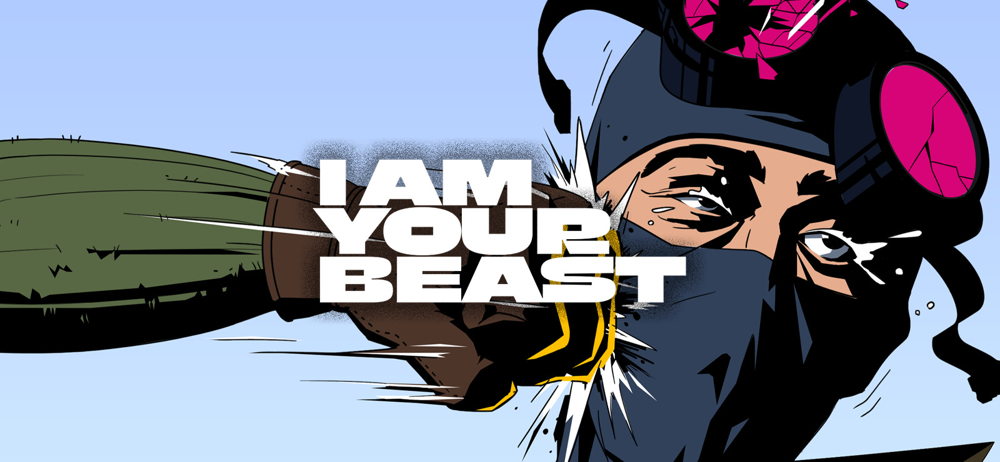
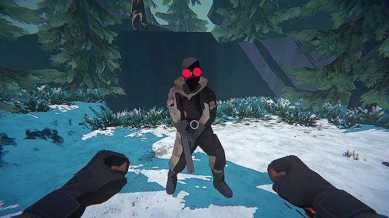
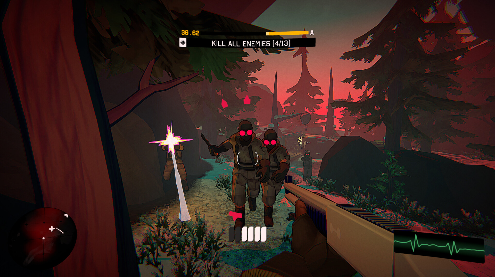
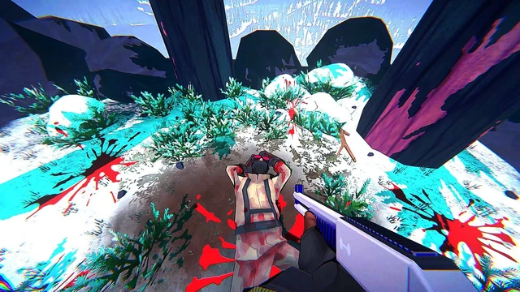

Trải nghiệm làm John Wick với I Am Your Beast - siêu phẩm hành động vừa ra mắt trên iOS
I Am Your Beast mang đến hàng loạt pha hành động mãn nhãn, khiến game thủ nào cũng phải choáng ngợp.
Game iOS mới, cho phép game thủ biến thành John Wick?
Chắc hẳn, nhiều độc giả đã từng nghe tới cái tên John Wick đúng không? Đây là nhân vật ảo, là cựu sát thủ đã một mình “cân cả thế giới” để trả thù những kẻ đã trộm xe và giết hại chú chó cưng của anh ta. Nhờ sở hữu thân thủ phi phàm, kỹ năng ám sát điệu nghệ và tất nhiên là… “cực ngầu” nên John Wick đã trở thành một biểu tượng điện ảnh ở thời điểm hiện tại.
Sẽ thế nào nếu bây giờ, game thủ được hoá thân thành một nhân vật giống John Wick, tự tay “lên đồ” và đi tàn sát tất cả những kẻ địch cản chân? I Am Your Beast - tựa game mới ra mắt trên iOS sẽ giúp độc giả giải đáp thắc mắc này.
I Am Your Beast lần đầu được ra mắt trên PC vào ngày 10/9/2024 và sau nửa năm, tựa game thú vị này đã có thêm phiên bản di động iOS. Tại đây, game thủ sẽ được nhập vai thành điệp viên đặc nhiệm Alphonse Harding, người đã nghỉ hưu nhưng liên tục bị kéo vào những nhiệm vụ nguy hiểm. Khi từ chối lời đề nghị cuối cùng của tổ chức COI, anh buộc phải chiến đấu chống lại toàn bộ tổ chức trên chính sân nhà của mình.
Các “John Wick” Việt Nam có thể làm được gì trong trò chơi này?
Lối chơi của I Am Your Beast đậm chất hành động - sinh tồn, kết hợp yếu tố chiến thuật và môi trường để tạo nên trải nghiệm chiến đấu độc đáo. Trò chơi cho phép game thủ tận dụng địa hình hoang dã và không gian đa chiều để giành lợi thế trong mỗi trận đấu. Bạn có thể lựa chọn phong cách chiến đấu lén lút, hạ gục kẻ thù mà không gây tiếng động, hoặc trở thành một "dã thú" thực sự với những pha tấn công dữ dội, sử dụng nhiều loại vũ khí từ súng bắn tỉa, bẫy gấu đến súng trường để tiêu diệt mục tiêu.
 Với hơn 20 cấp độ khác nhau, mỗi màn chơi mang đến một thử thách mới, buộc người chơi phải liên tục thích nghi và tìm ra chiến thuật phù hợp. Điểm đặc biệt là toàn bộ chiến dịch được lồng tiếng hoàn chỉnh, giúp tăng tính nhập vai và hấp dẫn của trò chơi. I Am Your Beast cũng được ví như một phiên bản game của bộ phim Rambo: First Blood, nơi người chơi hóa thân thành một chiến binh đơn độc chống lại cả một đội quân; hay John Wick - gã sát thủ lạnh lùng đồ sát nhiều thế lực hùng mạnh.
Tuy nhiên hiện tại, với phiên bản di động thì I Am Your Beast mới chỉ có mặt trên iOS, chưa có thông tin chính thức về bản phát hành trên Android. Người dùng iOS có thể tải game miễn phí, trải nghiệm thử trước khi quyết định mua bản đầy đủ.